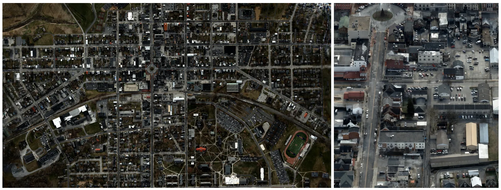
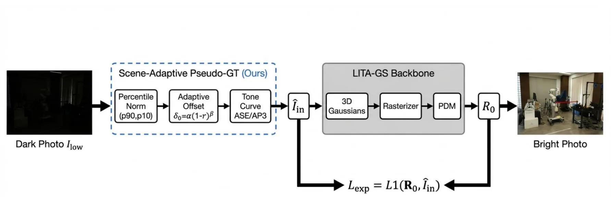
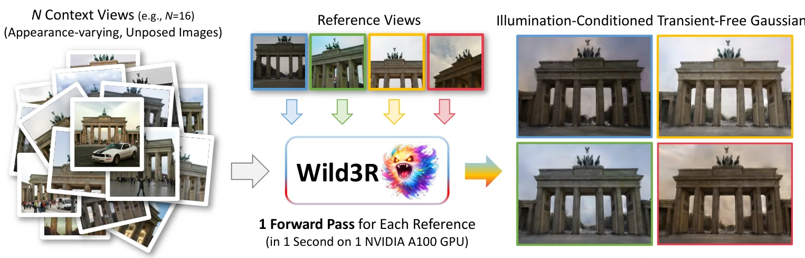
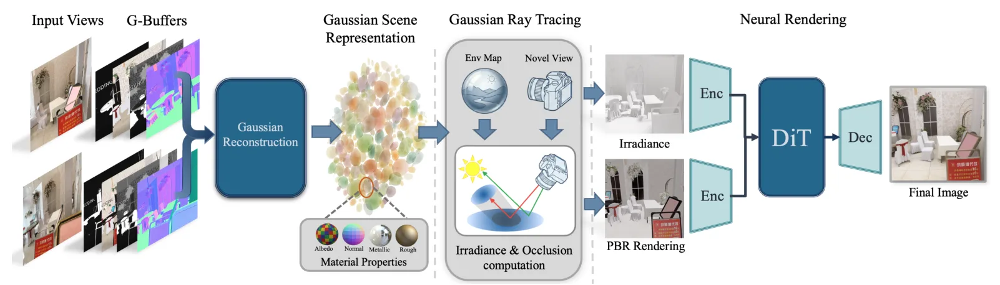
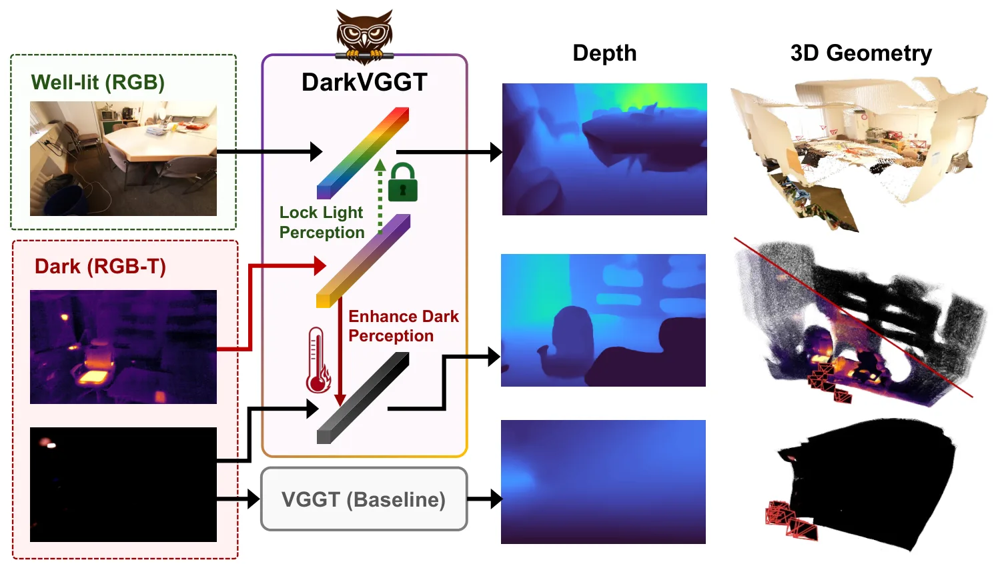
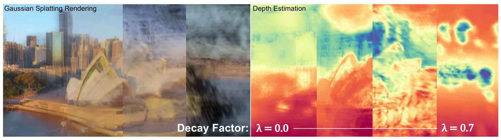

新论文 · 日期 2026-06-10 · score 13 · cs.CV, cs.DC, cs.GR, cs.LG
作者：Matthew Cong, Francis Williams, Jonathan Swartz, Mark Harris
评分 9/10
3DGS多 GPU大尺度重建PyTorch 后端城市数字孪生
一句话工作总结：该工作用 PyTorch 后端把 3DGS 参数与算子透明分布到多 GPU，展示十亿级 splats 的城市级重建。
3D Gaussian Splatting 已成为真实世界神经重建中的热门方法，但常受计算和显存限制，难以扩展到更高分辨率和更大场景。本文提出一种多 GPU Gaussian Splatting 方法，通过一个 PyTorch backend 将 Gaussian 参数和 splatting operators 分布到多张 GPU。该 backend 使用 CUDA unified memory 与 NVLink，…
Gaussian splatting methods have become increasingly popular for neural reconstruction of the real world. However, they are often limited in scale and resolution due to compute and memory constraints. We presen…

新论文 · 日期 2026-06-10 · score 12 · cs.CV
作者：Mingzhe Lyu, Jinqiang Cui, Hong Zhang
评分 8.2/10
低光重建3DGS伪真值生成Tone Mapping新视角合成
一句话工作总结：该方法用场景自适应非线性 tone curve 改善低光 3DGS 伪真值，提升暗光多视图重建质量且不改 backbone。
低光新视角合成很困难，因为暗光多视图图像含有噪声、结构细节弱且动态范围被压缩。近期 3DGS 方法在没有成对正常光参考时，会生成伪真值图像作为监督目标；但现有方法通常对所有像素使用统一线性增益，容易使亮区过曝，同时暗区增强不足。本文提出一个场景自适应非线性 tone-curve 框架，用非线性伪真值替代线性伪真值。框架包括面向跨场景应用的 percentile-based normalisation、自动黑电平调整…
Low-light novel view synthesis is challenging because dark multi-view images contain noise, weak structural detail, and compressed dynamic range. Recent 3D Gaussian Splatting (3DGS) methods address these chall…

新论文 · 日期 2026-06-10 · score 10 · cs.CV
作者：Yuto Furutani, Takashi Otonari, Kaede Shiohara, Toshihiko Yamasaki
评分 7.8/10
前馈 3DGS稀疏照片集动态/瞬态物体城市重建数据集
一句话工作总结：Wild3R 通过 WildCity 大规模数据学习在光照变化和瞬态物体下从稀疏照片前馈生成 3DGS。
前馈式 3DGS 省去了传统 3DGS 逐场景优化的耗时步骤，但现有前馈方法难以处理真实照片集中常见的光照多样性和瞬态物体。本文提出 Wild3R，面向非受控稀疏照片集的前馈式方法。主要瓶颈在于缺少同时包含多视角、多光照和瞬态变化的训练数据。为此，作者构建 WildCity 数据集，包含 200 个场景、170 种光照条件和瞬态物体，总计 337,500 张图像。借助该数据集，模型学习以参考视图为条件的跨视角外观一…
Feed-forward 3D Gaussian Splatting (3DGS) removes the need for time-consuming per-scene optimization required by traditional 3DGS. However, existing feed-forward approaches struggle with real-world photo colle…
新论文 · 日期 2026-06-10 · score 10 · cs.CV
作者：He-Bi Yang, Jing-Zhong Chen, Yen-Kuan Ho, Sang NguyenQuang
评分 6.6/10
3DGS 渲染增强感知质量压缩RDO纹理合成
一句话工作总结：该工作在 3DGS 渲染输出后接入轻量感知网络，用统计匹配补高频纹理，服务压缩与可视化质量。
3D Gaussian Splatting 虽然能实现优秀的实时渲染，但常难以合成高频纹理；在内存受限和率失真优化 pipeline 中，这一缺陷会被进一步放大。本文提出一个通用的 2D perceptual wrapper，以内容和视角相关方式增强现有 3DGS 表示的渲染输出。方法使用一个轻量 synthesis network，并以伪随机 Gaussian noise 为条件来合成感知上合理的纹理；网络由 W…
While 3D Gaussian Splatting (3DGS) achieves impressive real-time rendering, it frequently struggles to synthesize high-frequency textures, a limitation heavily exacerbated in memory-constrained and rate-distor…

新论文 · 日期 2026-06-10 · score 9 · cs.CV, cs.GR
作者：Or Perel, Hassan Abu Alhaija, Zian Wang, Jacob Munkberg
评分 7.4/10
3DGS神经渲染重光照可编辑场景数字孪生
一句话工作总结：TRON 把 Gaussian ray tracing 作为显式 3D scaffold，再用神经渲染实现可控重光照、对象插入和材质编辑。
TRON 是一个结合 3D Gaussian ray tracing 与神经渲染的框架，可在新光照、动态物体运动、对象插入和材质编辑下对真实 3D 场景进行真实且可控的渲染。仅依赖 Gaussian 表示 PBR 的方法常因重建几何、材质估计和光传输估计误差而难以真实重光照；而神经渲染方法又缺少显式场景表示，限制了细粒度交互编辑。TRON 使用来自学习式逆渲染模型的 intrinsic decomposition…
We introduce TRON, a rendering framework that combines 3D Gaussian ray tracing with neural rendering to enable realistic and controllable rendering of real-world 3D scenes under novel lighting, dynamic object…

新论文 · 日期 2026-06-10 · score 6 · cs.GR, cs.CV, cs.PF
作者：Steve Rhyner, Sankeerth Durvasula, Aleksandr Kovalev, Hansel Jia
评分 7/10
可微渲染点式表示XLA跨平台3DGS 基础设施
一句话工作总结：XPR 用高层接口和 XLA 编译降低点式可微渲染实现门槛，可快速实现 3DGS/3DGUT/LinPrim 等方法。
点式可微渲染支撑现代三维重建、新视角合成和学习式图形 pipeline，但开发新渲染方法通常需要大量底层实现、硬件相关 kernel 和手写反向传播，限制了快速原型、复现、探索和部署。本文提出 XPR，一个可扩展、跨平台的点式可微渲染框架。XPR 提供高层编程接口，将方法特定逻辑与共享渲染 pipeline 分离，使用户能用少量代码实现新方法。它把渲染 pipeline 分解为模块化、静态 shape 的并行操作，…
Point-based differentiable rendering underpins modern 3D reconstruction, novel-view synthesis, and learning-based graphics pipelines, but developing new rendering methods often requires extensive low-level imp…

新论文 · 日期 2026-06-10 · score 4 · cs.CV
作者：Minseong Kweon, Wenyuan Zhao, Nuo Chen, Lulin Liu
评分 8/10
RGB-T低光 SLAM前馈三维重建相机位姿估计热红外几何
一句话工作总结：DarkVGGT 把物理感知热红外线索注入 VGGT 类前馈几何模型，在黑暗环境中改善深度和相机位姿估计。
近期前馈式三维重建方法能从图像流高效端到端估计场景几何，但它们依赖可见光外观，因此在黑暗和低能见度环境中容易失效：RGB 线索严重退化，几何证据变得模糊。DarkVGGT 是一个 RGB-T 前馈几何框架，用物理感知热建模增强低光场景中的鲁棒三维估计。它包含两个互补模块：第一，physics-inspired thermal factorization 提取发射主导、几何一致的热红外线索，同时隔离可能造成几何歧义的…
Recent feed-forward 3D reconstruction methods have demonstrated strong performance and flexibility in efficient end-to-end scene geometry estimation from image streams. However, their reliance on visible-light…

新论文 · 日期 2026-06-11 · score 3 · cs.CV
作者：Gege Gao, Bernhard Schölkopf, Andreas Geiger
评分 3.2/10
三维重建模型退化交互艺术认知隐喻低优先级
一句话工作总结：该交互式艺术作品通过让前馈三维重建模型受控退化，展示“先验遗忘”对三维感知输出的影响。
记忆不仅是数据存储，也被视作现实感的脚手架。当生物记忆消退时，世界并不只是变黑，而会回退为难以识别的混沌。Echoes of the Prior 是一个交互式装置，试图可视化这种关于遗忘的主观现象学。作者通过在前馈式三维重建模型中引入受控突触衰退，构造关于大脑预测先验被侵蚀的艺术类比。该作品将神经网络定位为认知代理，而非工程工具；其结构性退化用于唤起失去世界把握时的迷失、诗意和恐惧体验。作者希望这一框架能促使社区探…
Memory is not merely the storage of data; it is the scaffolding of reality. When biological memory fades, the world does not simply turn black; it regresses into an unrecognizable chaos. Echoes of the Prior is…